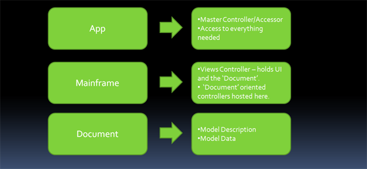

The architecture of the RCSB MBT Libs is a blend of two well understood architectures:
The App/Mainfame/Document structure is especially suited to desktop applications (of which the RCSB Viewer derivatives belong) and should be familiar to anyone who has worked with a mainstream windowing system, such as Microsoft’s C++/MFC, C#/Forms (application) framework, PowerPlant on the Mac, Viewkit on IRIX, etc.
We also like to think in terms of Model/View/Controller, and we can blend the two notions as follows:’’

From here, it is easy to determine where most systems fit into the architecture, and how to extend it, gracefully.
(Note that Architecture does not necessarily follow Source Division, which is described in the previous chapter, although there is overlap.)
A quick overview of the architectural components that make up the MBT (and is reflected up through the viewers) can be ascertained from the following diagram:
The component breakout, with a brief explanation of each is as follows:
App/Master Controller
The app class (in the viewers, derived from VFAppBase from the Viewer Framework project) is the focal point of the application. The main is typically attached to the derivation of this class. The derived class is typically named the same as the application.
This class is the means by which all of the other components (directly or indirectly) are accessed. Typical components are theMainframe/DocumentFrame and various controllers.
Mainframe/DocumentFrame
Applications typically have a main frame (or window) which contains a representation of the document. We introduce the notion of ‘DocumentFrame’ to distinguish it from ‘Mainframe’ for reasons we will discuss, later. For now, the entities are one and the same.
The ‘DocumentFrame’’ contains UI necessary to contain, display, and possibly interact with the document (such as control panels, menus, etc.) In that sense, it acts as a ‘views controller’.
It is also the access point for the model and doc-centric controllers (controllers that control some aspect of the document’s model, vs. controllers that may act globally or on other parts of the application.)
Note that by associating the model and doc-centric controllers with a frame, we now are free to expand the above single-framed representation to a multiple-framed representation:

This is simply a repeated structure for each DocumentFrame, with the addition of two more components:
:*A Multiple Frame Controller (not implemented this version.) This component (would do) the following:
::*Create the Document Frames as they are requested.
::*Provide access to the DocumentFrames, as well as their contained components.
::*Maintains ‘active frame’ status (most access requests will be via the active frame.)
:*'’Separated ‘Other UI’ ‘’ - UI that is not tied to a document, or is updated when the active Document Frame changes. An example would be a control panel that is not in a document frame.
An example multiple frame doc controller can be found in the TestBed project.
Model
An instance of the data that defines the model. Currently an array of
structures.
Controllers (doc-centric)
There are a number of these to control subfunctions/systems. Currently, these are:
:*DocController - controls the document, in particular loading/saving.
:*UpdateController - controls change updates sent to registered listeners.
:*SceneController - controls creation, access and changes to the scene.
:*StateController - controls state attributes of the document.
:*MutatorController - controls changes to the document.
More are expected to be added as functionality grows or functional units are further identified.
GlViewer
The 3d viewer, attached to the DocumentFrame. Renders the scene.
Other UI
Loose definition for various other views/panels/dialogs that are related to the document.